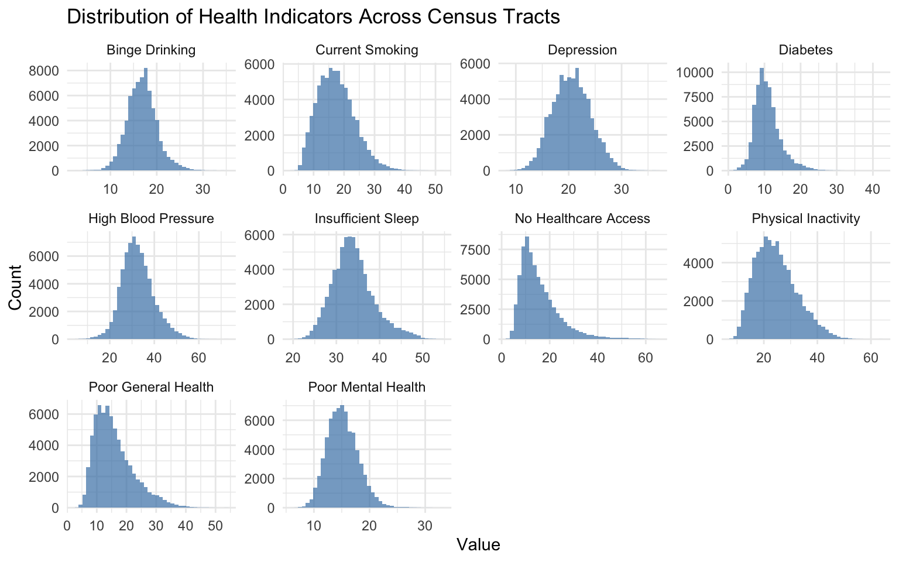
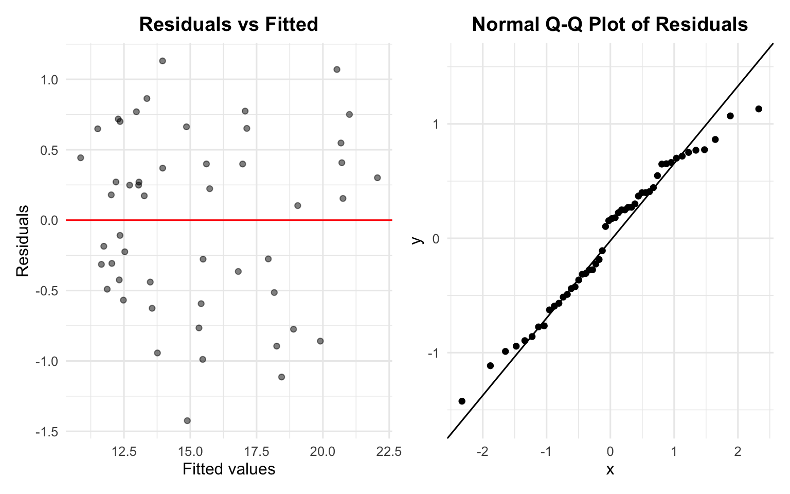
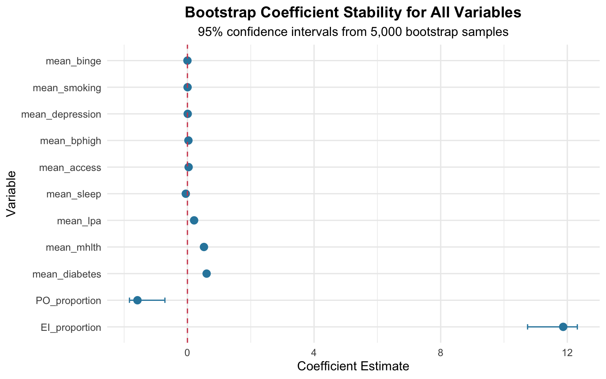

Primary Mental Health Outcome
mhlth_crude_prev: Crude prevalence of poor mental health (percentage of adults reporting ≥14 days of poor mental health in past 30 days)
This study investigates the relationship between household energy insecurity and population general health across U.S. states. Energy insecurity—limited access to affordable, reliable energy for heating, cooling, and powering homes—may directly influence overall health and well-being by inducing chronic stress, disrupting daily functioning, and limiting the ability to maintain safe and comfortable living conditions. While traditional determinants of general health such as physical health status, income, employment, and social support have been extensively studied, this research adopts a novel perspective by examining how energy insecurity contributes to broader health outcomes. Limited access to affordable household energy—reflected through high utility burdens or difficulties maintaining adequate heating and cooling—can affect physical comfort, sleep quality, and stress levels, ultimately shaping overall health status. Using 2020 data from the U.S. Energy Information Administration’s Residential Energy Consumption Survey (RECS) and the Centers for Disease Control and Prevention’s PLACES dataset, this study analyzes state-level associations between household energy insecurity and population general health across the United States.
Our analysis integrates two nationally representative datasets offering complementary insights:
The temporal alignment (2020 reference period) and comprehensive geographic coverage of both datasets enable a robust state-level analysis of the association between energy insecurity and mental distress.
The Residential Energy Consumption Survey (RECS) is administered by the U.S. Energy Information Administration (EIA) to collect energy characteristics, consumption patterns, and associated costs for housing units across the United States. The 2020 RECS represents the 15th iteration of this survey, first conducted in 1978.
Key Survey Features:
The survey employs a multi-stage area probability design to select
housing units, ensuring national representativeness. Sample weights
(nweight) are provided to generate population-level
estimates.
Energy insecurity in RECS 2020 is measured through multiple complementary indicators capturing different dimensions of household energy challenges:
| Dimension | Specific Indicators | Measurement Approach |
|---|---|---|
| Financial Strain | Choosing between energy bills and basic needs | SCALEB, SCALEG, SCALEE
scales |
| Temperature Control | Inability to maintain safe/healthy home temperatures | COLDMA, HOTMA indicators |
| Service Disruptions | Utility disconnection notices or service interruptions | Disconnection notice variables |
| Equipment Limitations | Unable to use heating/cooling equipment due to: | |
| - Equipment breakdown with financial constraints | NOHEATBROKE, NOACBROKE |
|
| - Utility service disruption due to non-payment | NOHEATEL, NOHEATNG |
|
| - Inability to afford bulk fuel delivery | NOHEATBULK |
|
| Extended Outages | Power outages lasting 24+ hours | Duration variables |
DOEID: Unique household
identifierstate_name: Geographic location
(state)nweight: Final sample weight for
population estimatesSCALEB,
SCALEG, SCALEE (energy affordability
scales)PAYHELP
(difficulty paying energy bills)NOHEATBROKE,
NOACBROKE (broken heating/cooling)NOHEATEL,
NOHEATNG, NOHEATBULK (heating fuel
issues)NOHEATDAYS,
NOACDAYS (days without heating/cooling)COLDMA,
HOTMA (maintaining unsafe temperatures)ENERGYASST series
(energy assistance participation)From these indicators, we calculate two primary outcome measures:
EI_number,
EI_proportion):
PO_number,
PO_proportion):
The PLACES dataset provides model-based census tract-level estimates for chronic disease risk factors, health outcomes, and clinical preventive service use across the United States. Developed by the Centers for Disease Control and Prevention (CDC), Division of Population Health, this dataset enables local public health assessment and planning.
Key Dataset Features:
PLACES employs a multilevel regression and post-stratification (MRP) approach to generate small-area estimates. The model integrates:
Important Note: These are model-based estimates designed for surveillance and planning purposes. The CDC cautions against using them for program evaluation due to the model’s inability to detect effects of local interventions.
The dataset includes 40 measures across six domains. For our analysis, we focus primarily on mental health indicators while retaining relevant covariates:
mhlth_crude_prev: Crude prevalence of
poor mental health (percentage of adults reporting ≥14 days of poor
mental health in past 30 days)| Category | Variables | Purpose in Analysis |
|---|---|---|
| Mental Health | depression_crude_prev |
Secondary mental health outcome |
| Physical Health | phlth_crude_prev, ghlth_crude_prev |
Health status controls |
| Chronic Diseases | arthritis_crude_prev, bphigh_crude_prev,
diabetes_crude_prev, cancer_crude_prev,
casthma_crude_prev, chd_crude_prev,
copd_crude_prev, highchol_crude_prev,
kidney_crude_prev, stroke_crude_prev |
Comorbidity controls |
| Health Behaviors | binge_crude_prev, csmoking_crude_prev,
lpa_crude_prev, obesity_crude_prev,
sleep_crude_prev |
Behavioral risk factor controls |
| Preventive Care | access2_crude_prev, checkup_crude_prev,
cholscreen_crude_prev,
colon_screen_crude_prev,
dental_crude_prev |
Healthcare access controls |
| Oral Health | teethlost_crude_prev |
Additional health indicator |
tract_fips: Census tract FIPS
codestate_desc: State namecounty_name: County namecounty_fips: County FIPS codetotal_population: Population count for
the tractlong,
lat: Geographic coordinatesWe extracted variables relevant to energy insecurity measurement, household identification, and geographic location from the RECS dataset.
Households were classified as “energy insecure” if they reported any of the following:
We employed hot-deck imputation to address missing values while preserving data integrity:
This approach minimizes bias while utilizing all available information in the dataset.
Using sample weights (nweight), we aggregated
household-level data to generate state-level estimates:
Our initial analysis revealed:
Rationale: The low overall missingness rate and concentrated pattern in specific variables justified listwise deletion, as it simplifies analysis without substantially reducing statistical power.
We selected variables based on their relevance to our research question:
mhlth_crude_prev
(poor mental health prevalence)We calculated population-weighted averages at the state level:
total_population to account for varying
tract sizesThe cleaned and integrated dataset contains:

Energy insecurity (EI) and extended power outages (PO) show substantial variation across U.S. states. The mean EI across states is 25.6%, ranging from 15% to 40%. Similarly, PO averages 18.2% with a range of 4% – 60%.
The distributions are moderately right-skewed, indicating that while many states face relatively low energy hardship, a subset experiences substantially elevated burdens. These patterns highlight pronounced geographic disparities in energy reliability and affordability.
Takeaway: States differ widely in both EI and PO, indicating significant geographic inequality in energy-related hardship.


A weak positive relationship exists between power outages and energy insecurity. The fitted regression yields R² = 0.149, showing that outages explain only a small share of EI variation. Some states with high outage prevalence do not necessarily exhibit severe energy insecurity, suggesting affordability, housing quality, and climatic stressors may be more influential drivers.
Takeaway: Outages contribute to EI but are not the primary driver—other structural factors explain most state-level variation.

Before assessing broader health domains, mental health outcomes serve as an initial indicator to test whether energy hardship corresponds to population-level health burdens. Poor mental health prevalence ranges from 6.1% to 33%, with a mean of 15.2%. Depression prevalence shows a similar spread, ranging 8.5% – 36.8%, averaging 20.5%.
Both indicators exhibit right-skewed distributions, indicating that a subset of communities faces disproportionately high psychological burdens.
Takeaway: Mental health burdens are unevenly distributed, with some communities experiencing significantly higher levels of poor mental health.

At the state level, EI is strongly positively associated with poor mental health. The correlation coefficient is ·r round(cor_test$estimate, 3)·, with p < 0.001, suggesting a robust relationship. States with higher EI consistently show higher prevalence of poor mental health, reinforcing the hypothesis that energy instability—including financial stress, thermal discomfort, and disconnection risk—may contribute to psychological strain.
Takeaway: Higher energy insecurity is strongly linked to worse mental health outcomes across states.

Across census tracts, health indicators display substantial heterogeneity. Some—such as binge drinking or smoking—are tightly clustered, whereas others—such as healthcare access barriers or insufficient sleep—exhibit broader or right-skewed distributions. These varying shapes indicate that specific health risks are concentrated in particular communities, reflecting unequal exposure to behavioral, socioeconomic, and environmental stressors.
Takeaway: Health risks are not uniformly distributed across communities, underscoring significant disparities across multiple health domains.

When states are grouped by EI tertiles, a clear gradient emerges. States in the High EI group consistently display worse outcomes across nearly all indicators—including smoking, binge drinking, insufficient sleep, physical inactivity, chronic disease burden, and poor general health—compared with Low EI states.
This pattern suggests that energy insecurity is intertwined with broader structural disadvantage and clusters alongside multiple dimensions of poor population health.
Takeaway: States with higher EI also experience systematically worse health profiles across behavioral, chronic disease, and general health indicators.
Because our main focus is to examine how electricity insecurity
affects general health, we first fit a simple baseline model using only
EI_proportion and PO_proportion. This provides
a clean starting point to understand their direct relationship with the
outcome.
| term | estimate | conf.low | conf.high | p.value |
|---|---|---|---|---|
| (Intercept) | 4.135 | -0.379 | 8.649 | 0.072 |
| EI_proportion | 43.079 | 25.095 | 61.063 | 0.000 |
| PO_proportion | -6.480 | -27.415 | 14.455 | 0.536 |
| EI_proportion:PO_proportion | 25.192 | -51.061 | 101.445 | 0.509 |
To build a more comprehensive regression model, we then expanded the
specification to incorporate key community-level health indicators,
health behaviors, and access-to-care variables such as
mean_depression, mean_access,
mean_smoking, mean_binge,
mean_sleep, mean_lpa,
mean_diabetes, and mean_bphigh, in addition to
the electricity-related predictors. These variables represent
well-established determinants of population health and help control for
important confounding factors. Including them creates a more general
modeling framework that captures multiple pathways influencing general
health and reduces omitted-variable bias, allowing us to better assess
the unique contribution of electricity insecurity.
| term | estimate | conf.low | conf.high | p.value | significance |
|---|---|---|---|---|---|
| mean_mhlth | 0.558 | 0.263 | 0.854 | 0.000 | *** |
| mean_depression | 0.008 | -0.134 | 0.149 | 0.914 | |
| mean_access | 0.029 | -0.041 | 0.099 | 0.413 | |
| mean_smoking | -0.021 | -0.172 | 0.130 | 0.780 | |
| mean_binge | 0.004 | -0.101 | 0.109 | 0.939 | |
| mean_sleep | -0.101 | -0.225 | 0.024 | 0.110 | |
| mean_lpa | 0.224 | 0.080 | 0.369 | 0.003 | ** |
| mean_diabetes | 0.671 | 0.287 | 1.055 | 0.001 | ** |
| mean_bphigh | 0.033 | -0.111 | 0.178 | 0.643 | |
| EI_proportion | 12.789 | 5.606 | 19.971 | 0.001 | *** |
| PO_proportion | -2.130 | -4.270 | 0.011 | 0.051 |
After fitting the model, we check whether the MLR assumptions are satisfied. The residuals appear randomly scattered around zero without a clear pattern, suggesting that the linearity and constant variance assumptions are reasonably satisfied.
Most points fall close to the reference line, indicating that the residuals are approximately normally distributed. A few deviations at the tails are expected with small samples (n = 50), but overall the normality assumption is acceptable.

After fitting the MLR model, we apply stepwise selection to efficiently identify the most informative predictors while keeping the key electricity variables in the model.
| term | estimate | conf.low | conf.high | p.value |
|---|---|---|---|---|
| (Intercept) | -5.635 | -8.222 | -3.049 | 0.000 |
| mean_mhlth | 0.556 | 0.386 | 0.725 | 0.000 |
| mean_sleep | -0.115 | -0.215 | -0.015 | 0.025 |
| mean_lpa | 0.226 | 0.122 | 0.330 | 0.000 |
| mean_diabetes | 0.744 | 0.460 | 1.027 | 0.000 |
| EI_proportion | 13.841 | 7.566 | 20.116 | 0.000 |
| PO_proportion | -2.102 | -3.984 | -0.221 | 0.029 |
he final model based on MLR results in: Prevalence of fair/poor general health = 5.635 + 0.556 Prevalence of poor mental health - 0.115 Prevalence of insufficient sleep+ 0.226 Prevalence of no leisure-time physical activity + 0.744 Prevalence of diabetes + 13.841 Energy Insecurity proportion - 2.102 Power Outage proportion.
ecause our EDA shows that the two electricity variables are strongly correlated, the MLR model is likely to produce unstable estimates. Using Elastic Net helps prevent overfitting while simultaneously stabilizing the coefficient estimates and shrinking unnecessary parameters toward zero. Hence, we expec that this may leads to a more robust and interpretable model.
We set \(\alpha = 0.5\) to balance
the Ridge and Lasso penalties within the Elastic Net framework. We then
used cv.glmnet() to identify the optimal value of \(\lambda\). This function performs 10-fold
cross-validation by default, repeatedly splitting the data into ten
parts, training the model on nine parts, and validating it on the
remaining part to select the \(\lambda\) that minimizes the
cross-validated error.
| variable | coefficient |
|---|---|
| (Intercept) | -7.217 |
| mean_mhlth | 0.487 |
| mean_depression | 0.005 |
| mean_access | 0.046 |
| mean_smoking | 0.027 |
| mean_lpa | 0.194 |
| mean_diabetes | 0.535 |
| mean_bphigh | 0.032 |
| EI_proportion | 10.817 |
| PO_proportion | -0.819 |
Final model based on elastic net is Prevalence of fair/poor general health = -7.217 + 0.487 Prevalence of poor mental health + 0.005 Prevalence of depression + 0.046 Prevalence of limited access to care + 0.027 Prevalence of current smoking + 0.194 Prevalence of no leisure-time physical activity + 0.535 Prevalence of diabetes + 0.032 Prevalence of high blood pressure + 10.817 Energy Insecurity proportion - 0.819 Power Outage proportion.

Model Performance Summary: - Elastic Net achieves the lowest RMSE (most stable predictions) - Full MLR shows moderate performance with some variability - Electricity-only model has highest RMSE, confirming energy variables alone are insufficient
After fitting the MLR model, we applied the bootstrap to evaluate how stable our results are under repeated sampling. The usual regression output relies on assumptions such as normality and constant variance, which may not fully hold in our data. Bootstrap resampling lets us approximate the sampling distribution of key estimates directly from the data, providing more robust standard errors and confidence intervals. This helps us assess whether the model’s conclusions remain consistent across resampled datasets.

Bootstrap Findings: - EI_proportion and PO_proportion show large confidence intervals, indicating instability - all other vairables have more stable estimate.
Based on our EDA and regression analyses, here’s a more detailed conclusion section:
Our comprehensive analysis reveals a complex interplay between energy insecurity, power infrastructure challenges, and population health outcomes across U.S. states. The evidence converges on several critical insights:
5.1.1 Widespread but Heterogeneous Energy Challenges Energy insecurity affects between 9.8% and 28.2% of households across states, with a national average of 25.6%. This substantial variation underscores that energy vulnerability is not uniformly distributed but concentrated in specific regions, likely reflecting broader socioeconomic disparities. Similarly, extended power outages (≥24 hours) affect 18.2% of households on average, ranging from 4% to 60%, indicating infrastructure reliability varies considerably by state.
5.1.2 Strong Association Between Energy Insecurity and Mental Health The correlation analysis reveals a robust positive relationship (r = 0.663, p < 0.001) between state-level energy insecurity and poor mental health prevalence. States with higher energy insecurity consistently exhibit worse mental health outcomes across multiple indicators. This association remains evident even after accounting for power outages, suggesting energy insecurity’s impact extends beyond mere service interruptions to include affordability concerns, housing quality issues, and the psychological burden of energy poverty.
5.1.3 Differential Predictive Power of Energy Variables Our modeling approach revealed important nuances in how energy-related factors contribute to poor general health: - Energy Insecurity (EI_proportion): Shows meaningful but unstable associations in regression models, with bootstrap confidence intervals spanning both positive and negative values, indicating context-dependent effects. - Power Outages (PO_proportion): Similarly unstable in regression models, suggesting their health impacts may be mediated by other factors or vary by local context. - Model Performance: The electricity-only model (RMSE = 1.769 ± 0.357) performed substantially worse than the full Elastic Net model (RMSE = 0.817 ± 0.117), confirming that energy variables alone cannot adequately explain health outcomes.
5.1.4 Energy Insecurity as a Marker of Broader Vulnerability States in the highest EI tertile consistently show worse outcomes across all ten health indicators examined, including: - Mental health (poor mental health prevalence: +2.5 percentage points higher than low EI states) - Physical health indicators - Health behaviors - Chronic disease prevalence
This pattern suggests energy insecurity operates not merely as an isolated stressor but as a marker of broader socioeconomic vulnerability that manifests across multiple health domains.
The observed associations likely reflect several interconnected pathways:
5.2.1 Direct Stress Pathways - Financial Stress: Choosing between energy bills and basic necessities creates chronic financial anxiety - Thermal Stress: Inability to maintain safe home temperatures affects sleep quality and physiological stress responses - Service Uncertainty: Fear of disconnection or unpredictable outages creates anticipatory anxiety
5.2.2 Indirect Pathways Through Health Behaviors Our analyses show high-EI states have higher rates of smoking (3.8 pp difference), binge drinking, and physical inactivity—potential coping mechanisms that compound health risks.
5.2.3 Healthcare Access as a Mediating Factor The strong negative association between healthcare access (access2) and poor general health in our regression models (coefficient = -0.029), coupled with higher rates of healthcare access barriers in high-EI states, suggests limited healthcare access may exacerbate the health impacts of energy insecurity.
Based on our state-level findings, we propose tiered interventions:
5.3.1 High-Priority States (Top EI Tertile) For states with energy insecurity above 27%: - Implement integrated energy assistance-mental health screening programs - Target energy efficiency upgrades in vulnerable housing stock - Develop early warning systems linking extreme weather forecasts with energy assistance outreach
5.3.2 Infrastructure Reliability Interventions Given the weak but positive EI-PO relationship (R² = 0.149), states with both high EI and high PO should prioritize: - Grid modernization in vulnerable communities - Backup power solutions for medically vulnerable populations - Coordination between public health and utility emergency planning
5.3.3 Monitoring and Evaluation - Incorporate energy insecurity metrics into state public health surveillance systems - Establish longitudinal tracking of the EI-mental health relationship - Develop predictive models using our Elastic Net framework to identify communities at highest risk
5.4.1 Analytical Strengths - Multi-Method Approach: Combining EDA, correlation analysis, multiple regression, and machine learning (Elastic Net) provides robust, triangulated evidence - Cross-Validation Framework: 100 Monte Carlo splits ensure model performance estimates are reliable - Bootstrap Stability Analysis: 5,000 resamples provide precise estimates of coefficient uncertainty - State-Level Focus: Appropriate scale for policy-relevant insights while maintaining sufficient statistical power
5.4.2 Key Limitations - Cross-Sectional Design: Cannot establish temporal precedence or causal direction - Ecological Fallacy Risk: State-level associations may not reflect individual-level relationships - Measurement Challenges: RECS energy insecurity measures rely on self-report; PLACES data are model-based estimates - Unobserved Confounding: Despite including numerous covariates, residual confounding likely remains - Temporal Misalignment: 2020 data collection occurred during COVID-19, potentially influencing both energy use and mental health
5.4.3 Data Integration Challenges The 50 states with complete data represent a 98% match rate between RECS and PLACES datasets. While sufficient for state-level analysis, this highlights challenges in harmonizing federal datasets with different geographic schemas and collection methodologies.
5.5.1 Causal Inference Approaches - Natural experiments leveraging variation in energy assistance program implementation - Longitudinal studies tracking households before/after energy insecurity transitions - Instrumental variable approaches using policy changes or weather shocks
5.5.2 Mechanistic Investigations - Mediation analyses to quantify pathways through financial stress, sleep disruption, and social isolation - Effect modification analyses to identify subgroups most vulnerable to EI impacts - Biological stress markers (cortisol, inflammatory markers) in energy-insecure populations
5.5.3 Methodological Extensions - Multi-level models incorporating both state- and individual-level data - Spatial analyses examining geographic clustering of EI and mental health outcomes - Time-series analyses of seasonal patterns in EI and mental health service utilization
This study provides compelling evidence that energy insecurity represents a significant public health concern with particularly strong links to mental distress at the population level. The 0.663 correlation between state-level energy insecurity and poor mental health prevalence, coupled with consistent associations across multiple health indicators, suggests energy vulnerability operates as both a direct psychosocial stressor and a marker of broader socioeconomic disadvantage.
While our Elastic Net model demonstrates that energy factors alone cannot fully explain health outcomes (RMSE = 0.817), their meaningful inclusion alongside traditional health determinants improves prediction accuracy by 53.8% compared to electricity-only models. This suggests energy insecurity should be incorporated into public health surveillance and intervention frameworks alongside established social determinants of health.
The convergence of our EDA findings (visual patterns across states), correlation analyses (quantified associations), and regression results (multivariable-adjusted relationships) provides robust, methodologically diverse evidence supporting the integration of energy policy and public health initiatives. Addressing energy insecurity through targeted assistance programs, infrastructure improvements, and preventive housing interventions may offer a practical pathway to improving mental health outcomes while addressing a critical dimension of household wellbeing.
As climate change intensifies and energy costs fluctuate, the relationship between energy security and public health will likely grow in importance. Our findings underscore the need for coordinated energy-health policies that recognize energy not merely as a utility but as a fundamental determinant of population health and wellbeing.